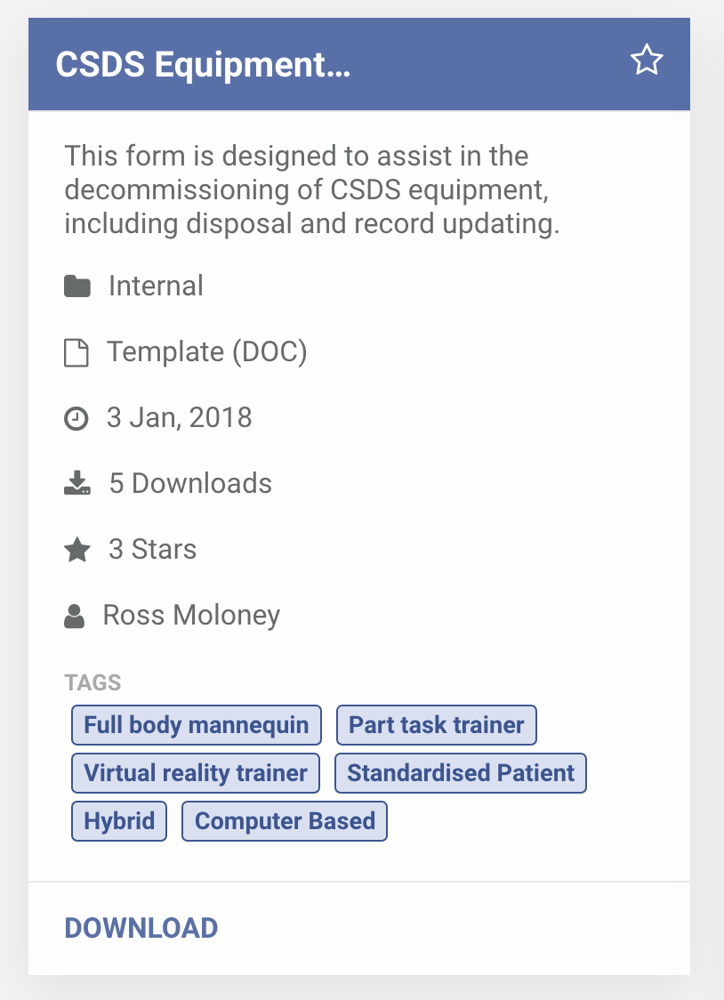
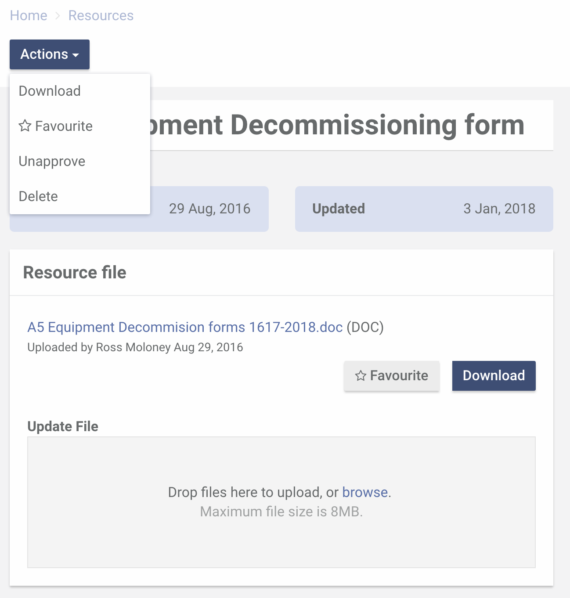

To mark a resource as a favourite, you can click the star button at the top right corner of the resource card.
Or use the Favourite menu item in the Actions menu of the resource page. You can also use the Favourite button found besides the Download button.
